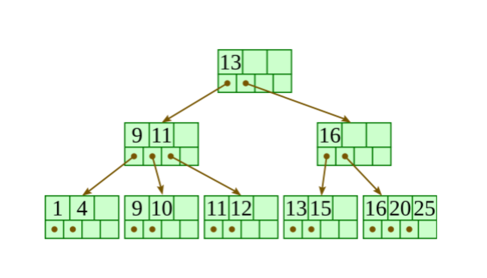
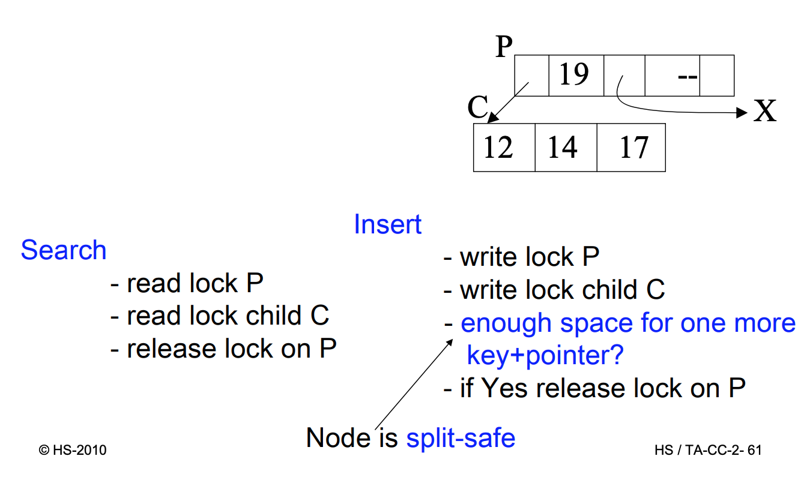
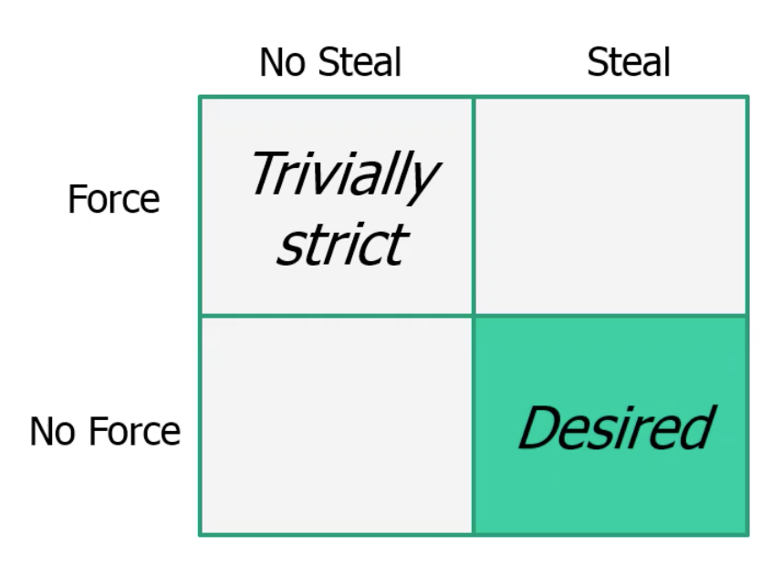

A transaction(TX) is a DB program, which only consists of read and write operations to a database. These operations are denoted as read(x)or write(x), where xis a DB object.
Let D = {x, y, z...} be a database. Then a transaction t(TX) is a finite series of operations in the form r(x) („read x“) or w(x) („write x“) denoted as t = p1, ..., pn with n < ∞, pi ∈ {r(x), w(x)} for 1 ≤ i ≤ n and x ∈ D. Indices are used to distinguish various (concurrent) transactions.
Let T = {t1, ..., tn} be a (finite) set of transactions. Thus
Notation for Schedule s
trans(s) = {ti|s contains actions of ti}
commit(s) = {ti ∈ trans(s) |ci ∈ s}
abort(s)= {ti ∈ trans(s) |ai ∈ s}
active(s)= trans(s) – (commit(s) ∪ abort(s))
op(s) = set of all the actions occurring in s


Every transaction must be processed in the way that the ACID properties are preserved.
Let s and s′ be schedules. s and s′ are called final-state equivalent, denoted as s≈fs′, if op(s) = op(s′) and all DB objects have at the end identical values in s and s′, according to the abstract semantics.
A schedule s is called final-state serializable if there exists a serial schedule s′ which is final-state equivalent to s. FSR is the class of all final-state serializable schedules.
Example 1:
s = r1(x)r2(y)w1(y)r3(z)w3(z)r2(x)w2(z)w1(x) and
s′ = r3(z)w3(z)r2(y)r2(x)w2(z)r1(x)w1(y)w1(x).
In s: x = f1x(x0) y = f1y(x0) z = f2z(x0, y0)
In s′: x = f1x(x0) y = f1y(x0) z = f2z(x0, y0)
⇒ s≈fs′ ⇒ s ∈ FSR
Example 2:
s = r1(x)r2(y)w1(y)w2(y)c1c2
s′ = r1(x)w1(y)r2(y)w2(y)c2c1
In s : y = f2y(y0)
In s′ : y = f2y(f1y(x0))
⇒ s ≈fs′ ⇒ s ∉ FSR
Let s be a schedule, t, t′∈ trans(s) and t ≠ t′:
Example
Let s = w1(x)r2(x)w2(y)r1(y)w1(y)w3(x)w3(y)c1a2.
Then: C(s) = {(w1(x), r2(x)), (w1(x), w3(x)), (r2(x), w3(x)), (w2(y), r1(y)), (w2(y), w1(y)), (w2(y), w3(y)), (r1(y), w3(y)), (w1(y), w3(y))}.
⇒ conf(s) = (w1(x), w3(x)), (r1(y), w3(y)), (w1(y), w3(y)). Conflict relations with an operation of transaction 2 have been removed.
conf(s) denotes the conflict relations of a schedule s, which are cleaned up by aborted transactions.
Three Serializability classes will be presented: CSR, OCSR and CO.

Let s and s′ be two schedules. s and s′ are called conflict equivalent, denoted as s≈cs′, if:
A complete schedule s is called conflict serializable, if a serial schedule s′ exists with s≈cs′.
The conflict graph

Theorem 2.2:
s ∈ CSR ⇔ G(s) is acyclic.
(Because the transitions can be ordered t2, t1, t3 in the example)
Membership in CSR can be tested in polynominal time
A complete schedule s is called order-preserving conflict serializable, there exists a serial schedule s′ with s≈cs’ and the following holds for all t, t′ ∈ trans(s):
If t occurs completely before t′ in s, then the same holds in s′.
A schedule s is called commit order-preserving conflict serializable (or owns the property of commit order preservation), if the following holds:
For all ti, tj ∈ commit(s), i ≠ j, with (p, q) ∈ conf(s) for p ∈ ti, q ∈ tj,
then : ci is before cj in s.

A schedule s is called recoverable, if the following holds:
(∀ti, tj ∈ trans(s), i ≠ j) ti reads from tj in s ∧ ci ∈ s ⇒ cj<sci
(If transaction 2 reads from transaction 1, then transaction 1 commits before transaction 2)
„Every transaction will not be released, until all other transactions from which it has read, are released.“
Example:
Let s1 = w1(x)w1(y)r2(u)w2(x)r2(y)w2(y)c2w1(z)c1
It holds: t2 reads y from t1 and c2 ∈ s, but c1 ≮ c2. Consequently s1 ∉ RC
Let s2 = w1(x)w1(y)r2(u)w2(x)r2(y)w2(y)w1(z)c1c2
It holds: s2 ∈ RC, because the commit operation of t2 is after the one of t1 , but the abort of t1 leads to the abort of t2, this may give rise to cascading aborts.
A schedule s avoids cascading aborts, if it holds:
(∀ti, tj ∈ trans(s), i ≠ j) ti reads x from tj in s ⇒ cj<sri(x)
„A transaction is only allowed to read values from already successfully completed transactions.“
Example:
s2 = w1(x)w1(y)r2(u)w2(x)r2(y)w2(y)w1(z)c1c2 ∉ ACA
s3 = w1(x)w1(y)r2(u)w2(x)w1(z)c1r2(y)w2(y)c2 ∈ ACA
Further problem: The values, which are restored after an abort, may be different from the Before Images of the write operations of the aborting transactions.
A schedule s is called strict, if the following holds:
(∀ti ∈ trans(s))(∀pi(x) ∈ op(ti), p ∈ r, w)
wj(x)<spi(x), i ≠ j ⇒ aj<spi(x) ∨ cj<spi(x)
„A schedule is strict, if an object is not read or overwritten, until the transction, which has written it at last, is terminated.“ (Same as before but now also with the write operation)
Example:
s3 = w1(x)w1(y)r2(u)w2(x)w1(z)c1r2(y)w2(y)c2 ∉ ST
s4 = w1(x)w1(y)r2(u)w1(z)c1w2(x)r2(y)w2(y)c2 ∈ ST
A schedule s is called rigorous, if it is strict and satisfies the following condition:
(∀ti, tj ∈ trans(s))rj(x)<swi(x), i ≠ j ⇒ aj<swi(x) ∨ cj<swi(x)
„A schedule is rigorous, if it is strict and no object x is overwritten, until all transactions, which have read x at last, are terminated.“
Techniques with which a DBMS can generate correct schedules for transactions to be processed; these are called scheduling protocols, or in short scheduler. A scheduler gets as input a sequence of operations (r,w,a,c) and it must produce a correct output schedule from them.
The scheduler can apply locks for the synchronization of accesses on data objects that are used together. There are two types of locks for an object x: - Read lock: rl(x) read lock, ru(x) read unlock - Write lock: wl(x) read lock, wu(x) read unlock
Rules for the application of locks
For each ti, which is contained completely in a schedule s, the following should be valid: 1. If ti contains a ri(x)[wi(x)], thus rli(x)[wli(x)] stands anywhere before it in s and rui(x)[wui(x)] stands anywhere after it. 2. For each x processed by ti there are exactly one rli(x) resp. wli(x) in s 3. No rui/wui is redundant
Examples:
s1 = rl1(x)r1(x)ru1(x)wl2(x)w2(x)wl2(y)w2(y)wu2(x)wu2(y)c2wl1(y)w1(y)wu1(y)c1
s2 = rl1(x)r1(x)wl1(y)w1(y)ru1(x)wu1(y)c1wl2(x)w2(x)wl2(y)w2(y)wu2(x)wu2(y)c2
A scheduler works according to a locking protocol, if for every output s and every ti ∈ trans(s) it holds: - ti satisfies the rules 1. to 3 for the application of locks. - If x is locked by ti and tj, ti, tj ∈ trans(s), i ≠ j, then these locks are compatible
A locking protocol is two phase, if for every generated schedule s and every transaction ti ∈ trans(s) it holds:
After the first oui action there is no further qli action (o, q ∈ {r, w}). Such a scheduler is called a 2PL scheduler.
“In the first phase of a transaction locks will only be set, in the second phase locks will only be removed.”
Examples:
s1 = rl1(x)r1(x)ru1(x)wl2(x)w2(x)wl2(y)w2(y)wu2(x)wu2(y)c2wl1(y)w1(y)wu1(y)c1
s1 is not 2PL. s2 = rl1(x)r1(x)wl1(y)w1(y)ru1(x)wu1(y)c1wl2(x)w2(x)wl2(y)w2(y)wu2(x)wu2(y)c2
s2 is 2PL
Theorem 2.2
ε(2PL) ⊆ CSR
Variants of 2PL - Conservative 2PL : All locks are available since BOT - Strict 2PL (S2PL): Hold all write locks till EOT - Strong 2PL (SS2PL): Hold all locks till EOT
Theorem 2.3
ε(S2PL) ⊆ CSR ∩ ST

If the database is tree-structured, two provisions are helpful : - Distinction between explicit and implicit locks (higher-level locks implicitly lock also lower level objects) - Propagation of locks in tree upwards as intention locks (irl, iwl, riwl)
Each transaction ti is locked/unlocked as follows: 1. If x is not the root of the database, ti must own a ir- or iw-lock on the parent node of x, in order to be able to set rli(x) or irli(x). 2. If x is not the root of the database, ti must own a iw-lock on the parent node of x, in order to be able to set wli(x) or iwli(x). 3. To read (write) x, ti must own a r-lock or w-lock on x. 4. ti cannot remove an intentional lock on x, as long as ti has still a lock on a child of x.
Summary: Locks are set top-down and removed bottom-up.
We can prove that, for every transaction, which keeps the 2-Phase rules, ε(MGL) ⊆ CSR is valid.
Assumption so far: - DB is a fixed collection of independent objects - Even Strict 2PL might not guarantee serializability if objects are added during a transaction.
Example: (Phantom Problem, assume page-level locking is used) 1. T1 locks all pages containing person records with sex=male, and finds oldest person (e.g. age=71) 2. T2 inserts a new male person with age=96 1. This record is inserted on a different page than the pages locked by T1 3. T2 deletes oldest female person with age=80 1. This record is also located on a page which is not locked by T1 4. T2 commits 5. T1 now locks all pages containing female person records and finds oldest (e.g. age=75)
⇒ There is no consistent DB state where T1 is correct!

A B+-tree of type (k, k * ) is a multi-path tree with the following properties: - Every node has one more references than it has keys. - All leaves are at the same distance from the root. - For every non-leaf node N with k being the number of keys in N: all keys in the first child’s subtree are less than N’s first key; and all keys in the ith child’s subtree (2 ≤ i ≤ k) are between the (i − 1)th key of n and the ith key of n. - The root has at least two children. - Every non-leaf, non-root node has at least floor(d/2) children. - Each leaf contains at least floor(d/2) keys. - Every key from the table appears in a leaf, in left-to-right sorted order.
There are two operations on a B+ tree that make modifies it:
Insertion - Descend to the leaf where the key fits. - If the node has an empty space, insert the key into the node. - Redistribute Phase: If the node is already full, split it into two nodes, distributing the keys evenly between the two nodes. - If the node is a leaf: take a copy of the minimum value in the second of these two nodes and repeat this insertion algorithm to insert it into the parent node. - If the node is a non-leaf: exclude the middle value during the split and repeat this insertion algorithm to insert this excluded value into the parent node.
Deletion - Remove the required key from the node. - If the node still has enough keys to satisfy the invariant, stop. - Redistribute Step: If the node has too few keys to satisfy the invariants, but its next oldest or next youngest sibling at the same level has more than necessary, distribute the keys between this node and the neighbor. Repair the keys in the level above to represent that these nodes now have a different “split point” between them; this involves simply changing a key in the levels above, without deletion or insertion. - Merge step: If the node has too few keys to satisfy the invariant, and the next oldest or next youngest sibling is at the minimum for the invarant, then merge the node with its sibling; if the node is a non-leaf, we will need to incorporate the “split key” from the parent into our merging. In either case, we will need to repeat the removal algorithm on the parent node to remove the “split key” that previously separated these merged nodes - unless the parent is the root and we are removing the final key from the root, in which case the merged node becomes the new root (and the tree has become one level shorter than before).
Simple Locking Algorithm
The Simple Locking Algorithm is an example of index locking. We set/remove locks in the following way:
Search: We begin at the root and go down. On each level we rl the child and unlock the parent. This until we reach the leaf.
Insert/Delete: We also begin at the root and go down. On each level we wl the child and then check if it is safe. A node is safe if the changes made will not propagate up beyond the node. In insertions, a node is safe if it is not full. In deletions, a node is safe if it not half empty. If the node is safe, then unlock all of its ancestors.
A con of the Simple Locking Algorithm is that the wl that we put on nodes that are not leafs are unnecessary, because only the leaf nodes are modified. The leaf nodes are the only ones that contain data.

Read or write operations refer to a page of secondary storage.
Theoretically, all changes on objects o made by t (write operations) should be flushed to disk exactly at commit. Unfortunately this would create a number of problems: - Steal (The risk of Early Disk Writing): usually the operative system and not the database system decides how the pages are used, so the buffer manager might choose to replace the frame in memory which contains the page with the object o (i.e. a frame is stolen from t).
In this case things are written on the disk before the commit, which could possibly lead to dirty reads. - Force (What about Late Disk Writing?): It is not optimal to always write on the disk at commit points (force), because this creates a lot of disk access requests at the same time and affects performance. If we allow changes to be flushed after commit (no force), the performance would increase.

Data Manager and Transaction Manager

The types of faults, which a DBMS must be able to handle: 1. Transaction faults: a transaction does not reach its commit point, e.g. by an error in program or an involvement in a deadlock. 2. System crash: parts of (volatile) main memory or buffers get lost, e.g. by errors in DBMS codes, in operating systems or hardwares. 3. Media fault: parts of (non-volatile) secondary storage get lost, e.g. by a head crash on a disk, faults in an operating system routine for the writes onto disks.
In the following only fault types (1) and (2) will be considered.
Crash Scenario

Transactions are classified now in two classes: - Transactions, which were already released before the fault. These need a REDO, if results are not permanently stored (No- Force situation). - Transactions, which were still active by the time of the fault. These need an UNDO, if some results are already stored on disk (Steal situation).
The Recovery Manager (RM) maintains a log file : - If t wants to write a new value of x, a Before-Image of x is written in the log beforehand (consisting of the ID of t, the ID of x and the old value of x). - The new value of x is logged in an After-Image (consisting of IDs for t and x as well as the new value of x).
To execute a REDO or UNDO of t, the log entries for t are read and processed in reverse sequence. Recovery protocols are classified whether only After-Images or only Before-Images or both (most systems) are stored.
Any protocol must satisfy the UNDO and REDO rules: - UNDO-rule („Write-Ahead-Log-Protocol“): The Before-Image of a write operation (the old value of x) must be written into the log, before the new value appears in the stable database. - REDO-rule(„Commit-rule“): Before a transaction is terminated, every new value that has been written by it must be in the stable storage (in the stable database or in log).
Direct consequence: - For No-REDO: ensure that all After-Images of a transaction are written in the database before or during the commit. - For No-UNDO: ensure,that no After-Image of a transaction is written into the database (but only the log) before the commit.
DB Schema

Dept(Department): - dno: department number (key) - dname: department name - mgr: managers (foreign key)
Empl(Employee): - eno: employee number (key) - name: employee name - marstat: marital status - salary - dno: department number (foreign key)
Office: - floor - room - eno: employee number (foreign key)